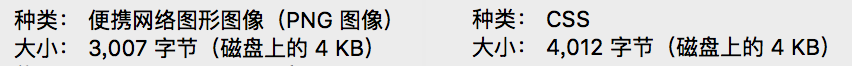
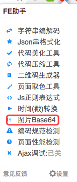

最近做 webview 时有一个微信分享功能，图片需要通过 base64 编码以后传到客户端，再显示在微信分享链接的气泡里。
一直听说 base64 编码，终于趁这个机会搞了个明白。
base64是什么
base64 编码是将图片转换为字符串，使用时，通过解码这个字符串，可以对图片进行完全还原。
在未知 base64 编码原理之前，我以最基本的认知认为，将图片编码是完全可行的。最简单暴力的一种编码方式就是记录下每个像素点的 rgb 信息，通过依次解码就能够还原整个图像。
base64 编码长什么样呢？
google 告诉你答案。在 google 首页，你会发现话筒的小图标就是通过 base64 解码得到的。

在这里，data:image/png;base64, 后面一大串字符串就是 base64 编码，通常情况下 base64 编码的结尾都会有 1-2 个 “=”。其中，png 指明了编码图片的类型，所以也可以写成这样：
data:image/gif;base64,data:image/jpeg;base64,
当然，也不一定是图片，字体文件、链接地址等都可以进行 base64 编码。比如你们一定很熟悉长这样的：
thunder://QUFodHRwOi8vd3d3LmJhaWR1LmNvbS9pbWcvc3NsbTFfbG9nby5naWZaWg==
迅雷的地址也是 base64 加密的哦。
以上地址是复制别人家的，如果是种子。。不要太感谢我。
使用 base64 编码的意义
先不讨论 base64 是如何编码的，之所以要对图片编码，是因为图片要通过 HTTP 请求才能获得，HTTP 请求多了就会影响网站的性能。
而编码后的字符串可以写在 html 或 css 文件里，只要文件加载完成就可以显示图片。如此一来，请求减少了，网站的性能自然会有所优化。
base64 的不足
一切听起来都是那么完美。
base64 原本是为了优化性能的，但我们真的如愿了吗？
base64 编码确实减少了请求，但相应地 CSS 或 HTML 文件体积也增大了。举个栗子，我们对下面这张 4KB 大小 png 格式的图标图片进行编码。
编码后，我们将编码保存在 CSS 文件里，然后做一下比较。

左边是原图的信息，只有 3007 字节，但编码之后字节变为 4012 字节反而增大了。即便 base64 编码能够被 gzip 压缩，压缩率达到 50% 以上，2000+ 个字符对 CSS 的可读性也会造成很大的影响。事实上，在大部分情况下，使用 base64 编码后的文件大小都会比原图片有明显的增加。
如果以上造成的问题不认为是大问题，那么，增加的文件体积会对渲染造成堵塞则是必须要引起我们重视的。CSS 解析会阻塞页面的渲染，也就是说，CSSOM 生成之前，页面是不会显示任何东西的。如果 base64 编码过长，那么解析时间大大增加，空白时间的增加将会降低用户体验。
由此可见，base64 存在一些适用条件，对于以下类型的图片才应该考虑使用 base64 编码：
- 文件大小极小的图片
- 会被大量重复使用的图片
- 不能使用 CSS Sprite（例如背景图）
既然这部分写的是不足，那么总要列举一些：
- 增加文件体积
- 编码成本
- 不能单独缓存编码，除非 CSS 文件被缓存
如何对图片编码
如果想通过代码的方式对图片进行编码，那么 canvas 是个不错的选择。简单来说，在 canvas 中插入图片，使用 toDataURL() 方法就能获得 base64 编码。
1 | function toDataURL(img) { |
如果使用 Chrome 浏览器，可以安装 WEB 前端助手（FeHelper）插件。这是一个集多个前端开发常用功能于一体的插件，不过我只用过图片 Base64 转换。

利用插件，可以qiao方便地实现图片到编码的人工转换。另外，插件还对比了原图片和编码的大小，给工程狮选择提供一些参考。